Objetivo
Reformar a cozinha para criar um ambiente moderno, funcional e acolhedor, otimizando o espaço e a circulação. O projeto foi levado até o nível executivo, com todas as informações para a marcenaria e a marmoraria fabricarem e instalarem as peças.
Solução adotada
- Ambiente de cerca de 3,80 × 1,80 m, organizado em "L":
- bancada com cuba e cooktop;
- torre quente com forno e micro-ondas em altura ergonômica, ao lado da geladeira e da lavadora;
- nicho iluminado junto à porta.
- Materiais:
- bancadas em mármore preto;
- armários em MDF cinza-sagrado, com detalhes em madeira;
- fundos em MDF branco;
- piso em porcelanato de grande formato.
- Iluminação com LED embutido na marcenaria e trilho de spots.
- Coifa/depurador integrada aos armários aéreos.
Metodologia
- Modelagem 3D do ambiente e do mobiliário, com renders do resultado final.
- Plantas e vistas cotadas (1:20) do ambiente, incluindo a planta de roda-base, que define o rodapé recuado dos armários inferiores.
- Detalhamento da marcenaria (1:10 e 1:20) módulo a módulo, com notas de execução para o marceneiro.
- Quantitativo das peças de MDF extraído do modelo no SketchUp, por material e dimensão, com estimativa de chapas e de custo de material pesquisada em fornecedor.
- Detalhamento da marmoraria: planta e vista da bancada em "L" com recortes para cuba e cooktop.
Resultados
Projeto executivo completo em 12 folhas, com:
- 3D e renders;
- 3 desenhos de planta e vista do ambiente;
- 5 folhas de marcenaria;
- quantitativo e orçamento de material;
- marmoraria.
As notas de execução que constam nas pranchas incluem:
- marcenaria:
- prever recuo da caixaria da gaveta e o sentido de abertura das portas;
- prever furo para o gás do forno;
- conferir as medidas do forno e do micro-ondas antes do corte;
- elétrica:
- prever fonte de energia para todos os eletrodomésticos;
- pontos e interruptor para o LED;
- ponto de energia para o depurador;
- marmoraria:
- conferir as medidas do cooktop e das cubas antes do corte;
- garantir o alinhamento da pedra com a marcenaria.
 |
 |
 |
Pranchas
Folha 01/12: projeto 3D
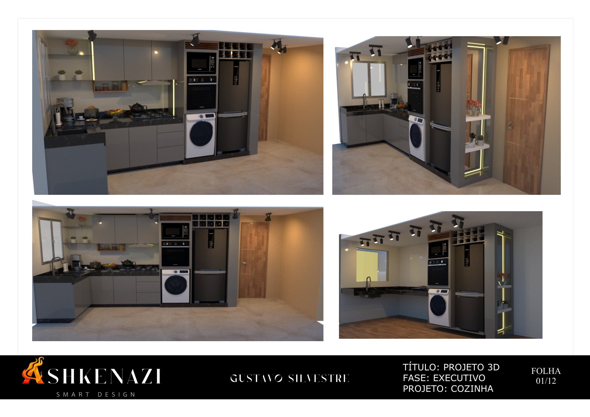
Renders do ambiente reformado, de quatro pontos de vista. PDF da folha
Folha 02/12: planta (1:20)
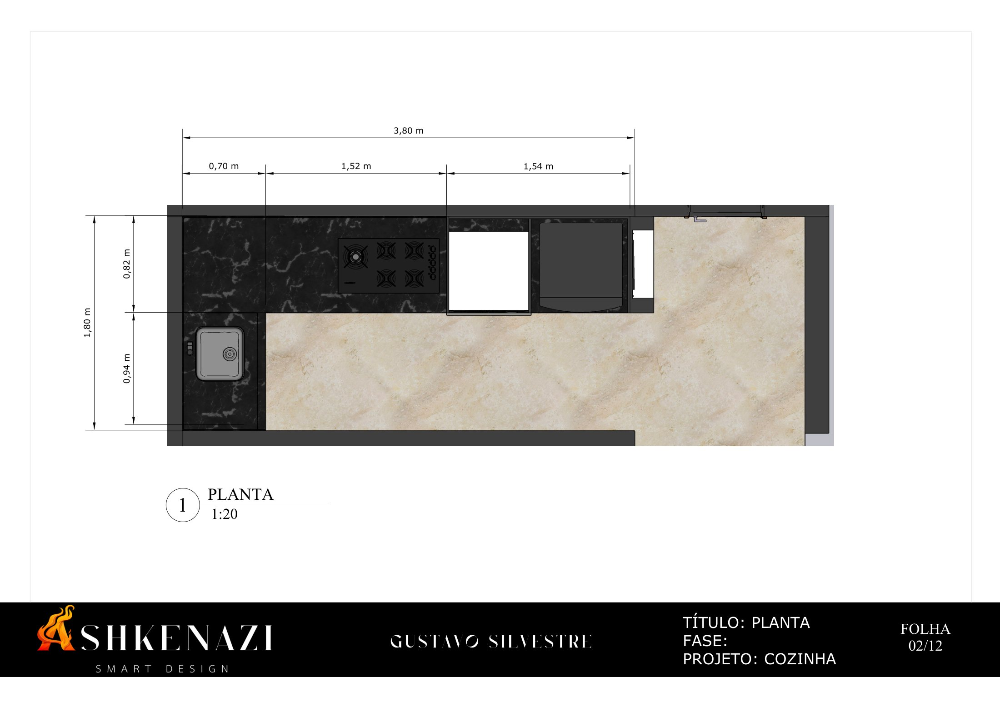
Planta do ambiente (3,80 × 1,80 m) com a bancada em "L", a torre quente e as cotas dos módulos. PDF da folha
Folha 03/12: planta de roda-base (1:20)
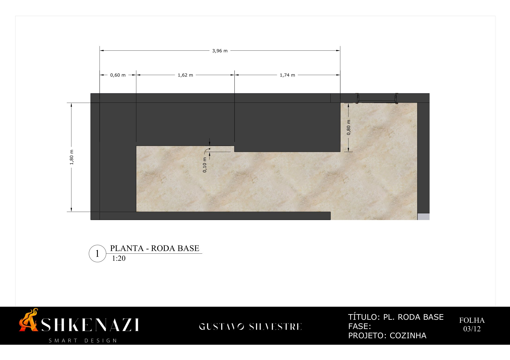
Contorno da base dos armários inferiores, com o recuo do rodapé em relação às portas. PDF da folha
Folha 04/12: vista (1:20)
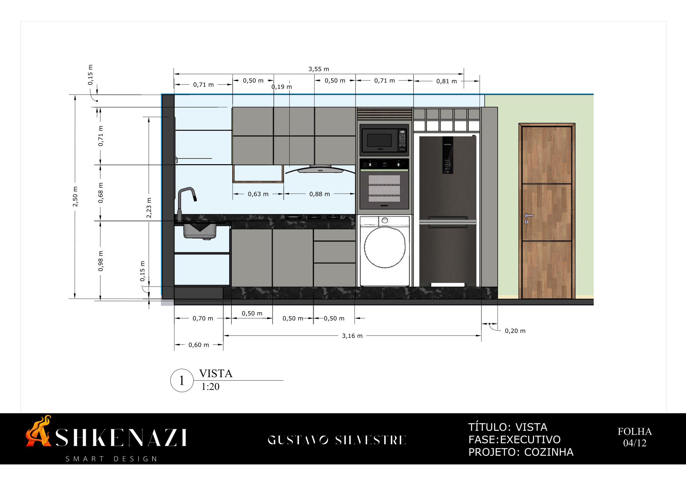
Elevação da parede principal: armários inferiores e aéreos, coifa, torre quente, geladeira e porta, com alturas e larguras de cada módulo. PDF da folha
Folha 05/12: vistas e 3D
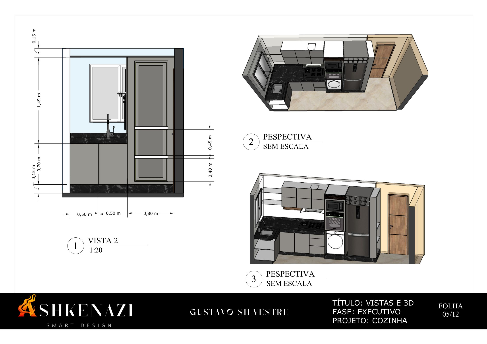
Vista lateral com a bancada da pia e a geladeira (1:20), mais duas perspectivas do conjunto. PDF da folha
Folha 06/12: marcenaria, perspectiva geral
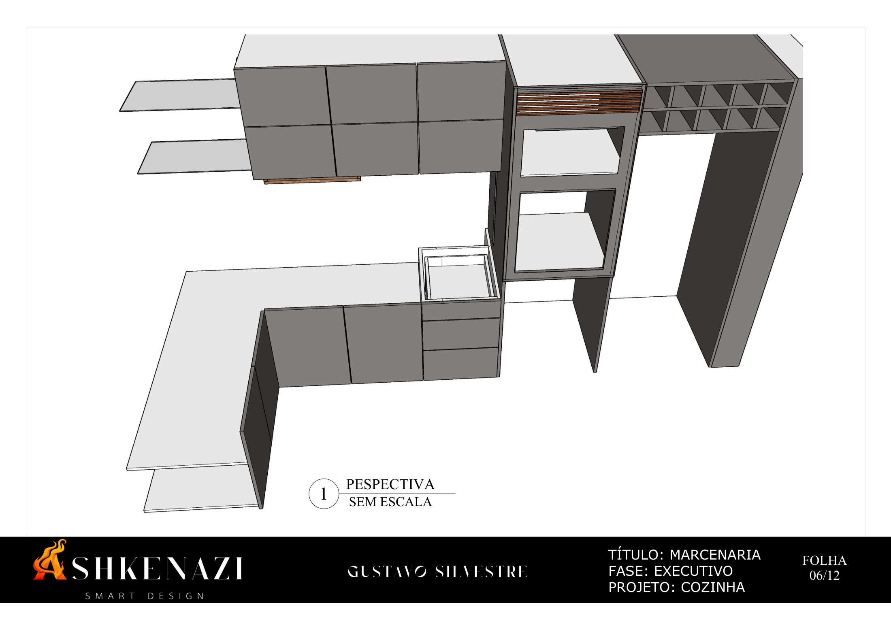
Perspectiva de todo o mobiliário sem acabamentos, mostrando a estrutura dos módulos. PDF da folha
Folha 07/12: marcenaria, bancada em "L"
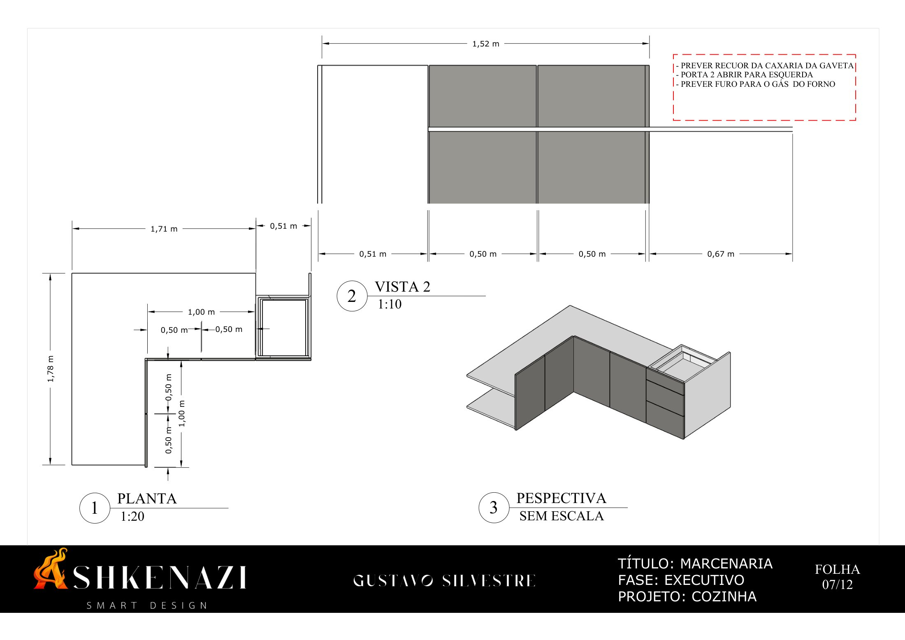
Planta (1:20), vista (1:10) e perspectiva dos armários inferiores, com notas sobre gavetas, portas e furo para o gás. PDF da folha
Folha 08/12: marcenaria, torre quente
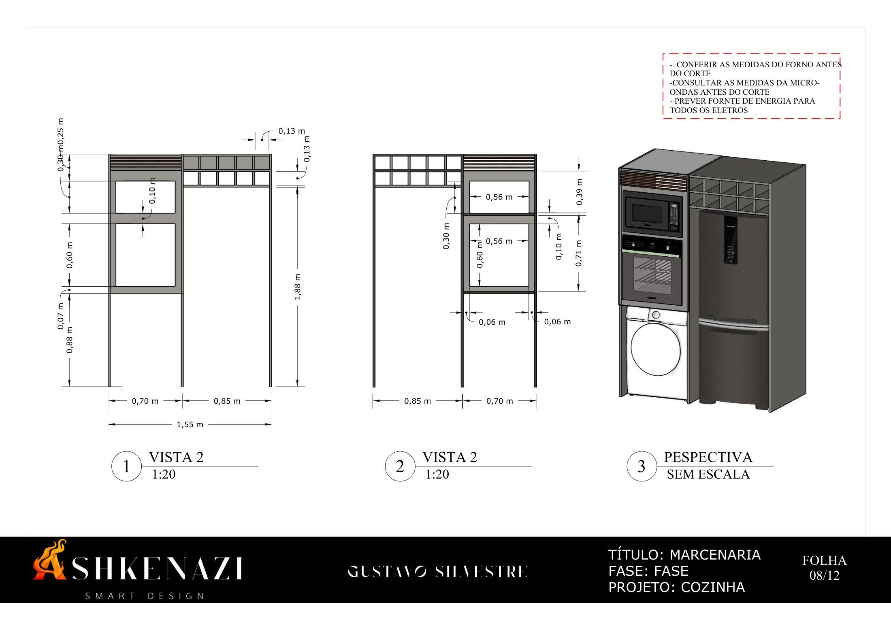
Vistas (1:20) e perspectiva da torre para forno e micro-ondas, com adega e espaço para lavadora e geladeira. PDF da folha
Folha 09/12: marcenaria, nicho com LED
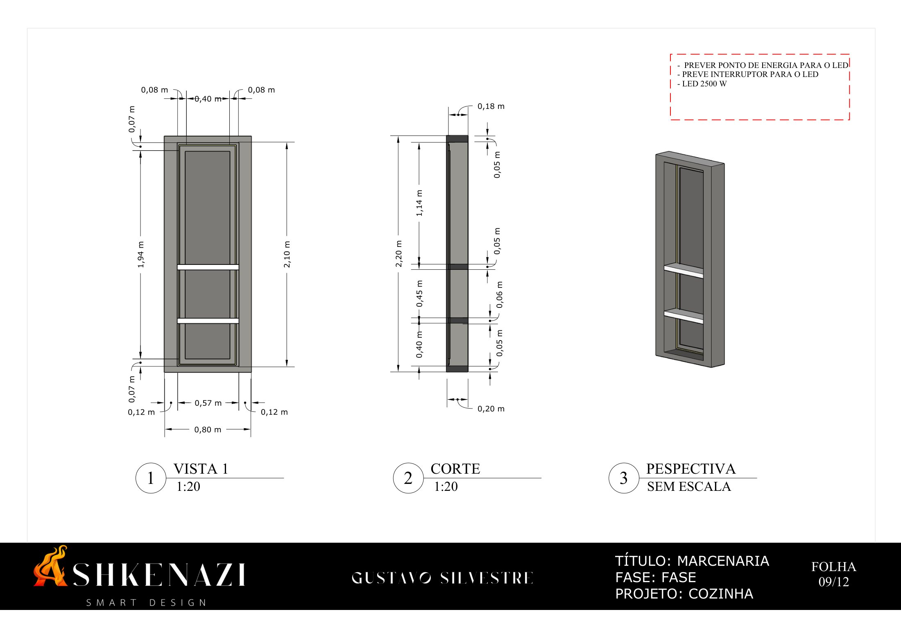
Vista, corte (1:20) e perspectiva do nicho de 0,80 × 2,20 m com prateleiras e iluminação em LED. PDF da folha
Folha 10/12: marcenaria, armários aéreos e depurador
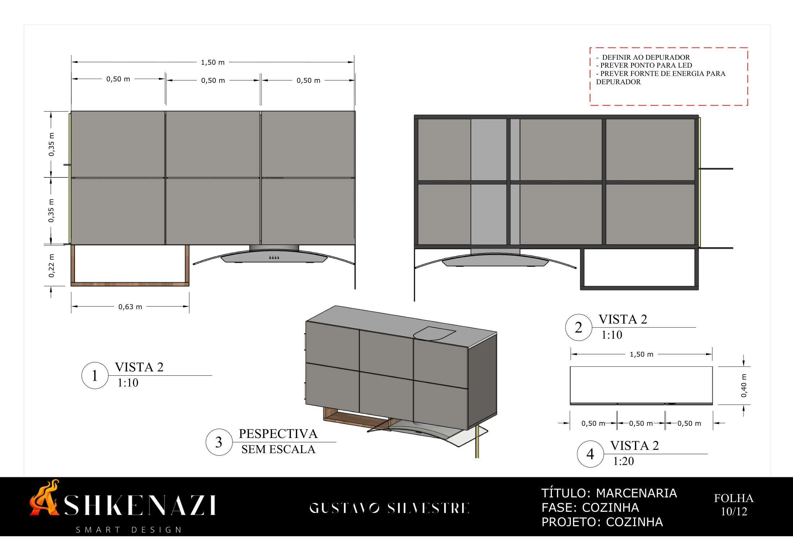
Armários aéreos de 1,50 m em três módulos de 0,50 m, prateleira em madeira e integração do depurador (vistas 1:10 e 1:20). PDF da folha
Folha 11/12: quantitativo e preço
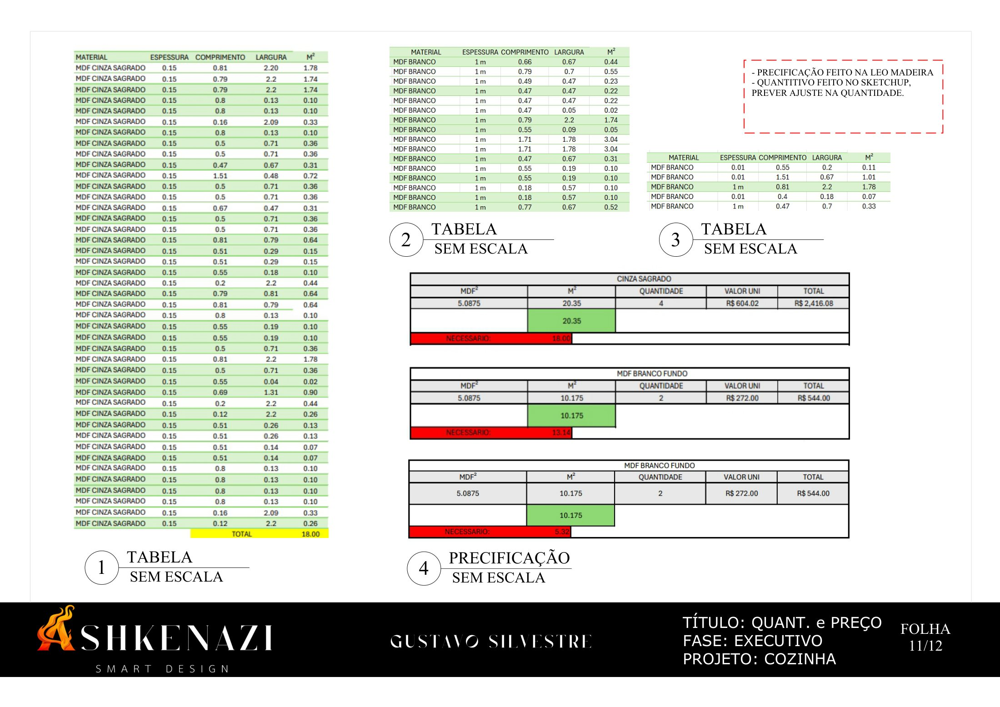
Tabelas com as peças de MDF por material e dimensão e a estimativa de chapas e de custo de material. PDF da folha
Folha 12/12: marmoraria
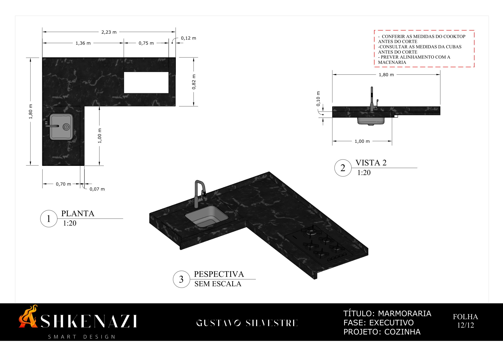
Planta (1:20), vista e perspectiva da bancada em "L" em mármore preto, com recortes para cuba e cooktop. PDF da folha
A capa do documento original foi omitida porque continha dados da cliente.